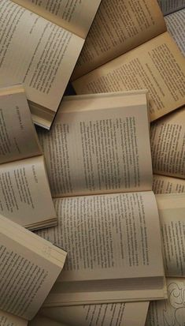

Conoce mas sobre nosotros

"The books' magic" surgio por el amor e interes hacia los libros, poco despues se creo un sitio web sobre este proyecto, pero solo como un proyecto de escuela, "The books' magic" se fundo el 9 de febrero del 2023. El local original media unos 150m2 y estaba ubicado en el Estado de Mexico
existen 41 tiendas "The books' magic" (18 en la Ciudad de México y 23 en el interior de la República. Además, the books' magic en Palacio de Hierro y Walmart Supercenters. Entre todos, el personal de books' magic, sus proveedores y sus clientes, hemos hecho de nuestra empresa la cadena más importante de librerías profesionales de México, y seguramente una de las más importantes de América Latina.
Constantemente brindamos a nuestros clientes diferentes servicios y promociones que enriquecen su experiencia de compra. Adicionalmente facilitamos espacios de expresión, en donde se llevan a cabo diferentes eventos y actividades culturales.
The books' magic se ha convertido en referencia inevitable para el mundo cultural e intelectual de México.
Estamos muy orgullosos por lo que hemos hecho, y por eso nos hemos propuesto continuar nuestro crecimiento, en beneficio de la cultura de nuestro país.
Dentro de los planes de expansión de "The books' magic" está el abrir nuevas sucursales en diferentes puntos de la República.
